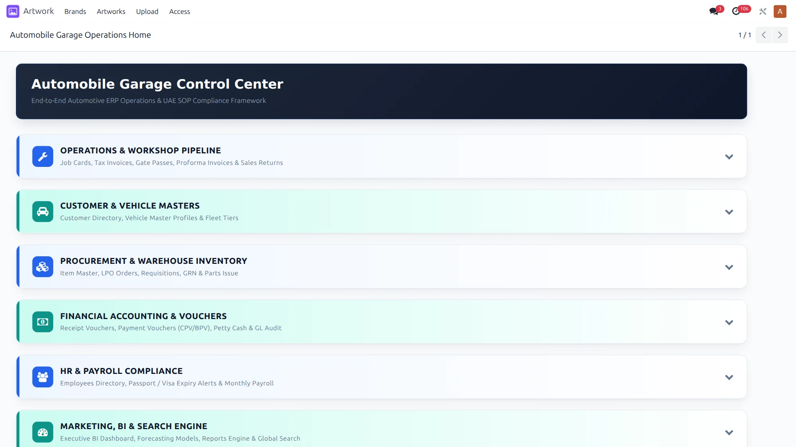
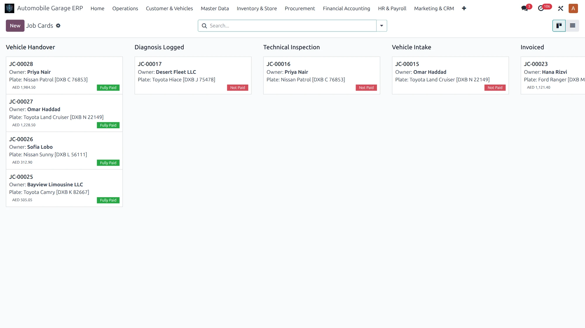
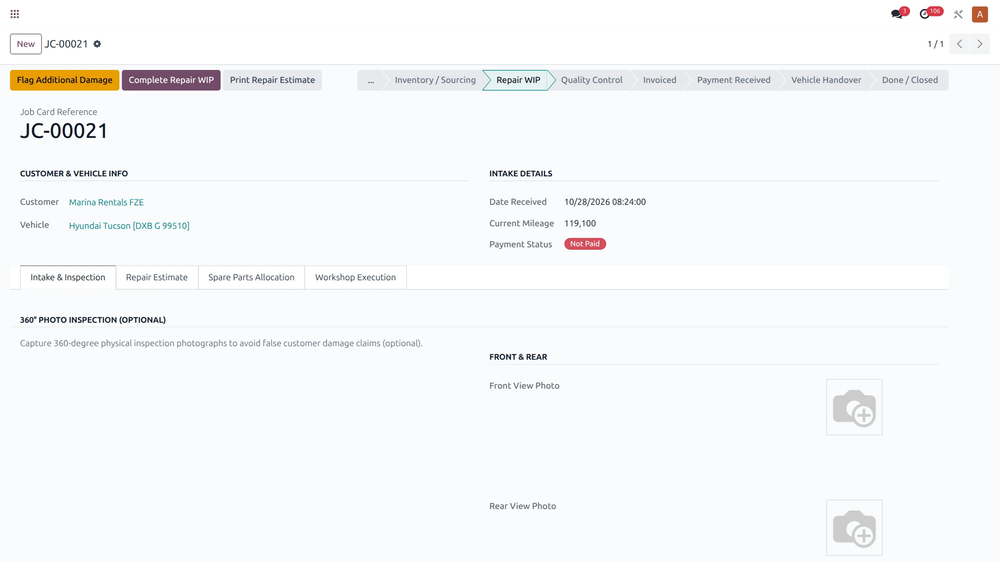
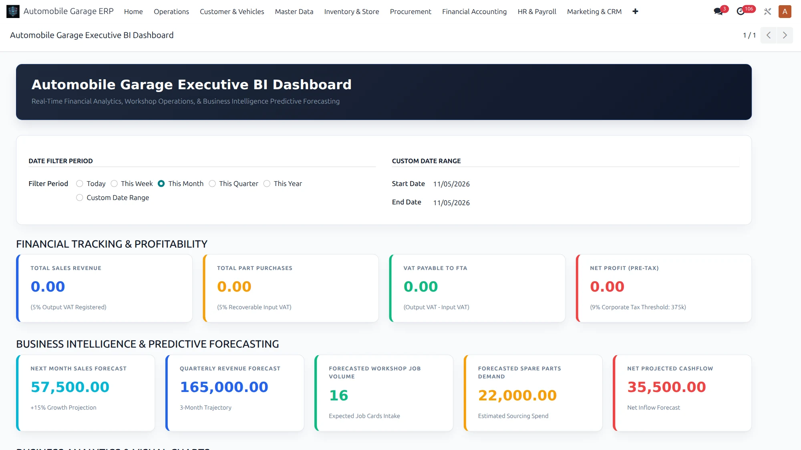
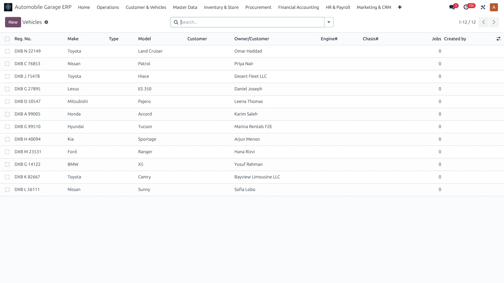

App 03 · Automotive ERP
A complete workshop ERP for a UAE garage, about 60 models in one Odoo app, running from vehicle intake to handover with VAT, stores, accounting, payroll and BI.

Captured from the real module on an anonymised copy of the database. Names are fictional, and confidential figures are blurred. Click any screen to enlarge it.
Control centre: every area of the ERP from one home screen.
Job cards across the 12-stage workflow, from intake to handover.

A job card in repair WIP: the stage bar runs from intake to handover, with tabs for inspection, the estimate, parts allocation and workshop execution.

Executive BI: sales, purchases, VAT payable, profit, forecasts and the workshop pipeline.

Vehicle master with VIN, plate, owner and mileage.
